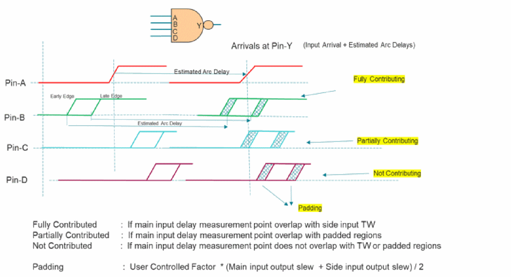
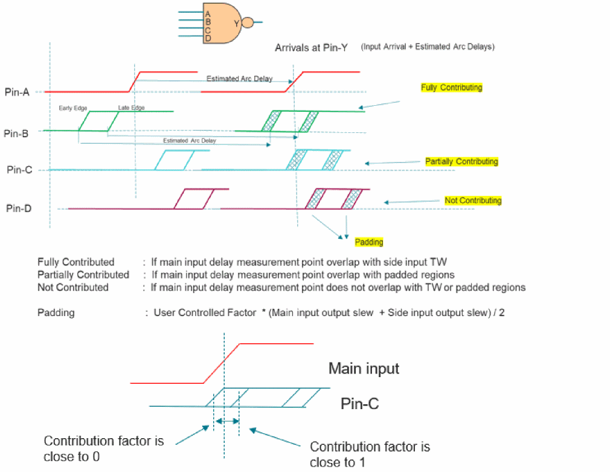
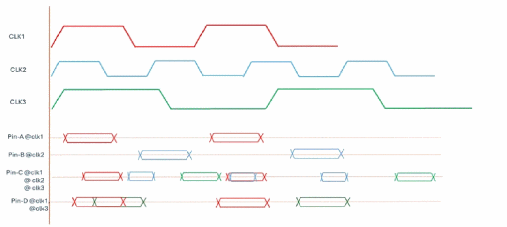

Overlap Checking
AMIS derate overlap checking is described in the examples below.

The main input and side inputs arrivals are propagated to the output pins by adding the corresponding NDLM delay of the arc. The overlap of main input with side input timing windows is checked at output pin. The side input timing windows are padded, which can be controlled using the formula shown in the diagram above.
If the main input is overlapped with the side input in the main region of timing window, then the input is considered fully contributing. If the main input is overlapped with side input in the padded area, then the input is considered partial contributing. If main input does not overlap in any region, then the input is not considered for MIS derate analysis.
Consider the following example.

The pre-characterized derating factor computed for 4-input NAND for given slew/load: 0.25
The simultaneous switching factor is computed based on the overlap of side inputs:
- Main-input :1.0
- Pin-B (full contributing) : 1.0
- Pin-C (Partially contributing) : 0.5
- Pin-D (No contribution) :0.0
Simultaneous switching factor (SSF) = 2.5
For different values of SSF, the derate value will be calculated as shown below:
|
The AMIS derate will be calculated based on the timing window overlap factor between the main and side inputs. |
The partial contribution calculation will be as shown below:
- If main input overlap in the padded region, such as input contribution, is determined by linearly interpolating its contribution value.
- If overlap happens close to the timing window edge, contribution is close 1.
- If overlap happens close to the far end of padding region, contribution is close 0.
- Small differences in arrival may not result in big changes in final derate calculations.
Handling Signals from Different Clocks
The following example illustrates how AMIS-Derate handles signals from different clocks.
Figure -118 Clock-groups have no impact on AMIS-derate

In GBA Mode
- The overlap checks are performed on a per clock basis only. For example, if Pin-C is the main input, the timing windows will be based on clk1, clk2, and clk3.
- Pin-C, as main input, will consider all the inputs as attackers if it:
- Pin-D as main input, will consider only Pin-A and C as attackers.
- Pin-B has timing window with clk2 and Pin-D does not have clk2 signal.
In PBA Mode
- The overlap checks are performed on a per clock basis only.
- Pin-A has data phase with clk1 only, thus consider checking pin C and D only for overlap check.
- Similarly, Pin-B has data phase with clk2, thus consider Pin-C only for overlap check.
- Pin-C has all the three clocks, thus check all the inputs as attackers.
Return to top